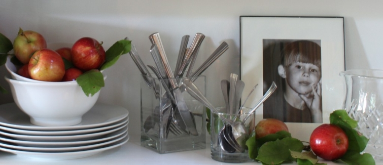
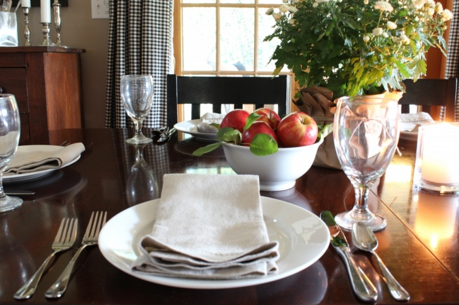
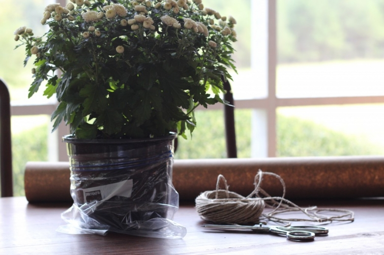

.png)
.PNG)
.PNG)
.PNG)
.PNG)
.PNG)
.JPG)
.JPG)
.PNG)
.PNG)



When it comes to table settings, I believe people fall into one of three categories. Category 1 people leave their dining table totally clear between meals so that they can have a workspace if needed. Category 2 people leave their table empty with the exception of a centerpiece. That way they have space for working on things, and they have a decoration to add beauty to the space. Category 3 people set their tables again as soon as they finish one meal, so that their table always looks its best. Which category do you fall into?

Years and years ago, I was in category 3- always a pretty table. Now I seem to fall into category 2 because I need the work area – but I still want something pretty in the room. (And if my flowers are dead, then I fall into category 1 until I can buy some new ones!) It was with this crazy “philosophy” in mind, that I started thinking about a table setting for September. Obviously, if you are a Category 1 table person, you won’t need to read this, but here is what works for me for a fall-ish centerpiece. I started with a pot of mums. Because I wanted to wrap the pot in kraft paper, I sat it in a ziplock bag first. That way it can be watered and not get the paper or table wet.

Everywhere I look online I see all the gorgeous autumn tables with pumpkins, but if I put pumpkins out now I will be soooo tired of them by late October. They wouldn’t even last around here until Halloween before I wanted to throw them out, much less Thanksgiving! So I decided to use apples…still fall – just a little subdued for this early part of the season. (Plus I am impatiently waiting on some real autumn weather before I can feel like the season has arrived.)

If possible, I like my centerpieces to be pretty and practical. So I put everything that would be needed for setting the normal everyday table in a white earthenware “tray” (not sure what that big thing really is) and made it a part of the centerpiece. So this is option number 1 for category 2 people. 🙂

The other two of our three ways for the September table are for category 3 people…those who like a fully set table. Option 2 simply involves setting the table with all of the things in the centerpiece above.

The only additional thing needed that wasn’t already in the centerpiece was a pillar candle that I put in the jar that was holding all the silverware.

The third and final option for September’s table was for a table with a few “extras.” First, I wanted to do something a little creative for placecards, so I used cardstock to make cards with questions to discuss at the dinner table. Then I wrote each person’s name on a little kraft paper bag and slid the cards inside.

Then I added a bottle of sparkling cider for each person to enjoy and an additional salad plate to each place setting.

Then the table was ready for an early fall dinner.

Since you are already here in the dining room, I thought you might like to see the other pieces of furniture in this little room. There is an antique cupboard over in the corner by the doors to the porch.

We keep cookies in the jars atop it (right now oatmeal and chocolate chip/M&M cookies.)

You can see the cabinet my husband made that is on the opposite wall, reflected in the mirror above the cookie jars.

Here is a little closer view of some of the shelves in it. I added a few apples for an additional little touch of autumn.

That’s all for September’s table and the dining room. If you don’t already have your table set for fall, I hope you get the opportunity to be creative with it very soon.

I am curious, though. Which of the categories of “table setting people” do you fall into? You already know I fit in category 2. Oh…I can’t believe I forgot this one thing! At Christmas I am definitely a category 3 since Christmas china is one of my most favorite things.
I’d love to hear about your table style in the comments!


.PNG)
Love your kitchen and I am new on your blog site. Your home is charming! I am so glad I have found your blog. Thanks for taking the time to do this.
———————————————————————-
Marlene – Thank YOU for taking the time to read and leave your sweet comments! I am so glad you found the blog and that you like our home. I love decorating, and “meeting” new friends through the blog has been a lot of fun. Please come back to visit again!
Kelly
I’m a category #3 I like to table scape so that’s how I started keeping it set. I love you photos. I’m always drawn to a site with good photography. Also LOVE the idea of the table conversation starter questions. I may have to steal that idea for Thanksgiving dinner!! Nice to find your site.
———————————————————————–
Oh, Shirley we are all jealous of you being a #3! Tablescaping is a lot of fun, and it sure makes a dining area look beautiful. Thank you for the compliment on the photos…I am just learning how to use this camera, and the automatic focus has broken on it. (Compound that with my poor vision, and we are lucky to get anything to come out in focus!) Go right ahead and steal the conversation starters for your Thanksgiving dinner! They always generate interesting talk, and you could include questions about what are you most thankful for…or what would you serve for Thanksgiving if you were to plan it. (Not all of my crew likes turkey and dressing.) So glad you dropped in on the table conversation here! Please come back again.
Kelly
Category 2! We don’t eat at our table often enough to have it set ~ everything would get dusty! Something I noticed, off the subject, was your lovely mix of metals and wood tones. Just beautiful! It’s easy to think all the metals must match or all the wood be natural or white. Your home proves the beauty of mixing it and is done successfully. Thank you for sharing!
————————————————————————-
Barbara – That’s funny about your things getting dusty! You are either eating out in restaurants a lot, or you have a more casual space in your home that you like to eat at. Wow, I have never thought about my mixing of metals. We are pretty mixed up here!): I HAVE often thought about my mix of white painted wood with all the stained wood around here – and it has bothered me at times. Thank you for reassuring me that it actually works! You don’t know how much I appreciate it!
Kelly
Kelly,
What a pretty table setting, all 3. I’m with you, I pace myself on fall elements…I want to make sure I’m still in the mood for pumpkins come November. I love apples in a bowl this time of year. The cupboard your husband made is very nice.
Have a great weekend.
Karen
——————————————————————-
Karen – I’m glad to know I am not the only one who doesn’t jump on the pumpkin wagon 🙂 this early! Apples work well for September. I love the cupboard my husband made for the dining room because it works so well in that little space. Thank you for all your sweet comments!
Kelly
LOVE IT KELLY!!! The placecard conversation questions are a genius idea, and I love those big glass jars of cookies. Oh, and I think I’m a #2 most of the time. 🙂 Great post girl!
———————————————————————–
Aimee – Gosh, thank you! “Genius” – don’t know that anyone has ever said that about me, but I like it! 🙂 Seems like everyone around here is a number 2 for their table style. So glad you liked the post.
Kelly
Your table looks so pretty Kelly. I just love your style.
I always have something in the center of the table. In the past, I tried to keep placemats and napkins out to look pretty but in a house of boys they would get shooshed to the side or the floor. Shooshed is a word, right?
————————————————————————-
Stacey – I don’t know if shooshed is a word, but I understood PERFECTLY what you meant, and that is whole purpose of language! I used to use placemats for all of our meals but have steered away from them lately since it just seems like another thing to wash (and I can’t keep up with all the laundry now as it is!) We do use cloth napkins though. I am glad you liked the table. You are so sweet.
Kelly
I love your conversation starters! What fun! I’m going to try that sometime. I’m a category 1 girl on the breakfast table b/c I have three young children with sticky fingers and we home school on that table part of the day. On my dining room table, I’m category 2 b/c we home school there some, but it’s a much bigger table. With just a center piece I can also use it to fold laundry : )
———————————————————————–
Julianna – It sounds like you make good use of the tables in your home beyond just eating there! We use our sofa for folding clothes and the mantle for hanging them up…which leaves the greatroom looking lovely until everyone picks up their clothes to take to their room. 🙂 Maybe I should do a post on where everyone does their laundry… ha ha. Thanks for sharing your “table style.”
Kelly
I’m in category #2. There is too much pet hair flying around my house to leave plates on the table. I also love the look of open shelving but won’t happen at my house. With 5 dogs and 3 cats you never know where you’ll find hair or slobber.
————————————————————————-
Cindy – 5 dogs and 3 cats would certainly be a major thing to consider in many things in your home. I think it is great you can do a centerpiece on the table! If it were me, I would be afraid of the cats getting into it. Thank you so much for reading and adding to our “table talk” here.
Kelly
I am definitely a category 2 person myself. There’s no way that I could have a set table all the time with my husband. Lol.
———————————————————————–
Stephanie – That is so funny! I guess we have to accommodate our guys since they live in the house with us too! ):
Kelly
Hi Kelly,
I LOVE seeing more of your house and your diningroom looks beautiful!. I am definitely a Category #2 person. I love the look of a beautiful dining room table with a centrepiece (usually flowers and perhaps some candles) in between setting for a special dinner.
Take care
Cath
————————————————————————-
Cath – You are so sweet! Thank you for the compliments. Our dining space is small, but it is very workable. We can even extend that table to seat 12 – with the head of the table seated in the doorway, but it is the one room I would like to make wider (move the door-to-the-porch wall out a few feet.) We “category 2 people” seem to be the majority around here!
Kelly
i’m definately category #2 but sometimes #3! right now my table is set with a pretty fall theme but also has my sewing machine on it…not very pretty but i’m making some pillows for my front porch bench.
i would love to be #3 all the time but due to “certain people” in the house (a/k/a husband) it’s very hard to have my table set all the time. but i always have something nice in the middle.
as always, i love getting these little peeks into your home!
——————————————————————–
Judy – I think a sewing machine on the table is a great thing! 🙂 It shows that you are being creative and getting things done – unless it has been parked there unattended for days…like my vacuum cleaner in the playroom. So glad you liked the peek into the dining room. If I can get some things done around here today, perhaps I can give you some more peeks next week. Hope you got your pillows made.
Kelly
Kelly, this is so beautiful! I really love your dining room. I’m a category 2 as well…I have to have a beautiful centerpiece especially something seasonal, but I need the workspace too. Sometimes I wish I was a Category 3 with beautiful place settings all of the time, but with little Gracie, that is not possible for us.
—————————————————————————
Lindsay – Thank you for your compliments on the table settings! We have a lot of category 2 people here. You are right, Gracie probably does limit you in the things you can leave out on the table. (She is not so little anymore!) I appreciate you for reading all the posts and leaving your comments here for all of us.
Kelly
I’m a Category 1 person. This may be because we don’t have a dining room – just an eat-in kitchen, and my seven year old needs a place to do homework. Our fanciest centerpiece lately has been candles – my kids love to blow them out after dinner. 🙂
————————————————————————
Deborah – An eat in kitchen that is used for homework would certainly limit your table décor choices. Candles are great and fun for your kids! I love the smell when they have just been blown out. Thank you for dropping in on the blog and the conversation here!
Kelly
I am definitely in category 2, I have the centerpiece only. Not so much that I need the work space, it is more out of habit.
Your table looks lovely and such a nice idea with the questions in their name bag, brings out some table conversation. Unfortunately are children are all grown up but something to save for when they come and visit..thanks.
———————————————————————–
Cheri – It seems like most of us fall into category 2 – maybe that makes us practical and pretty (not a bad combination to be.) The question cards certainly bring out the conversation. One of our kids graduated with a philosophy degree, so you can imagine there is a lot of discussion on things here! I hope you can use the idea when your children come to visit. Thank you for your sweet words about the table decorations.
Have a great weekend!
Kelly
Hi Kelly!
Love the “apple theme” so pretty! My favorite touches you’ve added are the paperbag name cards with the questions tucked inside. Where can I find those little bags? Love the little bottles of sparkling cider for each guests! I guess I fall into category 2, my dining room table is a school desk Monday through Friday since I homeschool, then transformed on the weekends with a pretty centerpiece. This is why I love visiting your blog. This is so thought out and beautiful! Thanks, Kelly 🙂
———————————————————————
Patty – Thank you for your sweet comments about the table! I got my little bags at Michaels. They were in the section where they sell the gift bags. Your table would definitely need to be cleared during the week if you are homeschooling, but that is nice that you add the centerpiece for the weekend. We love that sparkling cider – I am addicted to fizz! In fact the only water I drink is fizzy water (yes, I know a bad girl here.) I am so glad you love the blog and appreciate the “thinking” behind the posts.
Kelly
Hi Kelly!
I definitely fall into the #1or 2 category. With 2 tables in the house, dining room and breakfast room, and many ornaments on the walls and surrounding surfaces, I find that a clear table gives the eye a place to rest. I have alway thought that every room needs that one place of calmness. Sometimes it is a blank wall! But I think a clean table is another way to provide that calmness in a room where other surfaces contain items.
————————————————————————
Wanda – That is such smart thinking about needing a place for the eye to rest in a busy space, and the table is a good spot for that. I am sitting here looking around for the eye-resting place in this room where I am typing…hmm..do doors count?? 🙂
Kelly